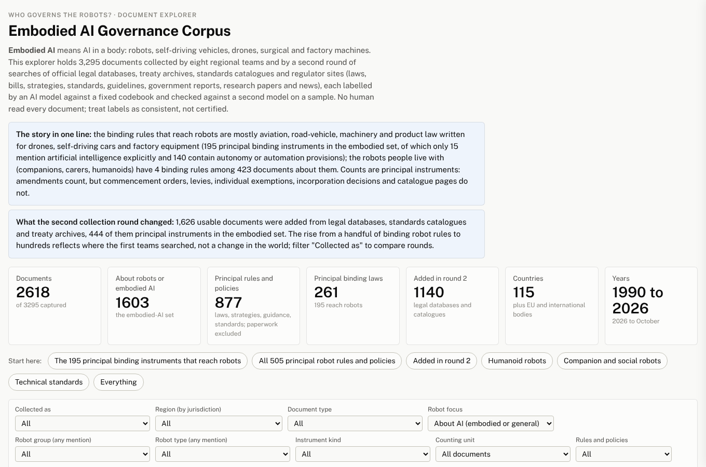

A study of 3,165 documents from eight world regions · expanded edition
What the world’s laws, standards and research papers say about machines that act in the physical world, explained for people who are new to the subject, with the evidence behind every number
Centre for Enterprise Innovation (CEI), AI Robotics project
Version 4 of the study, 31 October 2026 · 41 slides
Collected, labelled and reviewed with AI agents; no person read every document
Project hub, all deliverables: claude.ai/artifact/QRA3FAoGPUDJeNAg4QUQoA
Why this matters
Most writing about “AI rules” is about software: chatbots, recommendation systems, credit scoring. A robot, a drone or a self-driving car is AI with a body. When it goes wrong, the harm is physical, and the questions change.
Can it hurt someone? A 200 kg arm or a 1,500 kg car can.
How close may it work to people: a factory cage, a hospital corridor, a sidewalk?
Who pays when it damages property or injures a person?
How much may the machine decide on its own, and when must a person step in?
The study calls this embodied AI: robots, drones, vehicles, surgical and factory machines. It asked what rules exist for them, anywhere in the world, and what those rules actually say.
Source: paper, Sections 1 and 2
What came before
AI ethics and AI law
Reviews of ethics guidelines (84 in 2019, 36 in 2020, 200 by 2023) found the same handful of principles everywhere and little effect on practice. That pushed governments toward binding rules with risk tiers, testing before sale, audits and oversight bodies; the EU AI Act became the reference point.
All of it is about software.
Robot law and robot ethics
An older line of work argues that machines acting physically raise their own questions: bodily harm, closeness to people, liability for damage, how much autonomy to delegate, certification before market. Its reference points are the RoboLaw guidelines (2014), the European Parliament’s 2017 resolution, the ISO robot-safety standards and Korea’s 2008 Intelligent Robots Act.
Mostly expert argument, rarely counted.
The OECD.AI observatory lists over a thousand policies but does not separate machines with bodies or code what each text says; legislation trackers record events, not content; the robot-law mappings are hand-coded and European. This study is the first coded collection that separates embodied from general-AI governance, scores six body-specific concerns, and reports how its own counts move with the counting unit and the search strategy.
Source: paper, Section 2 (Background)
The study
| No. | In plain words | Why it is hard |
|---|---|---|
| 1 | What rules for robots exist, and how many? | The answer changes with what you decide to count as “one rule”. |
| 2 | Which robots are governed, and which are only studied? | Researchers and lawmakers pay attention to different machines. |
| 3 | What makes a robot rule different from a general AI rule? | Robot rules and AI rules come from different kinds of documents. |
| 4 | Do regions of the world differ? | Each region’s documents are a different mix of papers, laws and standards. |
| 5 | What is changing over time? | Old laws are amended; dates can mislead. |
| 6 | Does how you search change what you find? | This question arose from the study itself. The answer is yes, a lot. |
Source: paper, Section 1
How it was done
Round 1: people searching the web
Eight regional teams (Africa, Asia, Europe, Latin America, Middle East, North America, Oceania, international bodies) searched for anything about robot and AI governance.
They found research papers, strategies and guidelines, but few actual laws.
1,656
documents after duplicates were removed
Round 2: AI agents searching legal databases
Nine AI search agents and seven scripts queried official law databases (EU, UK, Japan, China, Australia, US, Brazil), standards catalogues and treaty archives for the laws the first round missed.
2,075 candidates, 1,720 texts obtained, 1,626 usable.
1,641
documents added to the collection
Together
3,295
documents, 3,165 with enough readable text to use
116
countries, plus the EU and international standards bodies
75% in English; Chinese is the second language
Source: paper, Section 3; round-2 companion report, Figure 50
How it was done · round 1
Between 2025 and October 2026, regional teams for Africa, Asia, Europe, Latin America and the Caribbean, the Middle East, North America and Oceania, plus an international layer assembled across teams, ran two exercises.
Robot-specific sources: anything about robots, drones, vehicles and their governance.
General AI-governance instruments: strategies, guidelines, laws about AI in general, as the comparison group.
2,160 sources recorded
1,894 captured as 2,557 files
1,656 documents after duplicates removed
266 sources could not be captured, 109 of them in the European sprint. Duplicates were found by content hash, URL, normalised title and text similarity; 27 of 34 oversized or restricted files were recovered.
What the teams found: research papers, strategies and guidelines. What they missed: the aviation, vehicle and machinery registers where binding law lives. Round 1 held 65 robot instruments, 5 of them binding.
Source: paper, Section 3 (Collection round 1); Table 53
How it was done · round 2
Prompted by the first round’s coverage audit, a second round looked where the law lives. Nine AI search agents, each with a regional, thematic or standards brief and the round-1 holdings as an exclusion list, plus seven scripted harvests of official databases. No person curated the candidates.
EUR-Lex (EU law) · legislation.gov.uk · Japan’s e-Gov law API · China’s State Council policy library · Australia’s Federal Register of Legislation · the US Code of Federal Regulations · Brazil’s Chamber of Deputies API
355 candidates never yielded a text: 272 returned errors or script-only pages, 46 sat on hosts that block automated access, 37 failed otherwise. They are counted nowhere.
2,075 candidates after de-duplication (1,157 from agents, 918 from harvests)
1,720 texts obtained and annotated
1,641 entered the master table (79 cross-round duplicates removed)
1,626 usable
Of the 1,720 texts, 1,704 came from the issuing source or a fallback route and 16 standards’ scope pages through a mirror. Every text was labelled with the same metadata-blind, long-excerpt policy as the first round’s governance documents.
Source: paper, Section 3 (Collection round 2); round-2 companion report, Tables 50 to 52 and Figure 50
How it was done
An AI model (Claude) read every document against a fixed questionnaire of 39 fields, the same for all 3,295 documents: What kind of document is this? Is it legally binding? Which machines does it cover? Which safety and ethics topics does it mention, and which does it spell out in detail?
The model saw only the text, not the collector’s notes, so it could not be steered by a label someone had already given.
No person read or labelled any document. The collectors in round 2, the reviewers of earlier drafts and the auditor were also AI agents. Treat every label as consistent, not certified.
Agreement is measured with kappa: 0 means two readers agree no more than chance, 1 means they always agree. Above 0.8 is usually called strong.
| Check (160 documents each) | Round 1 | Round 2 |
|---|---|---|
| A second, different model | 0.85 | 0.86 |
| The same model, run again | 0.91 | 0.91 |
Weakest fields: judging page quality, a document’s stance toward regulation, and whether a law is still in force.
Source: paper, Sections 4 and 5.8; supplement S4.7
How it was done
Source: codebook and annotation schema (supplement S2); every field has a fixed list of allowed answers where a count is given
How it was done · a repair
Before a document reaches the model, a cleaner strips menu lines and navigation from the top of web pages. The rule used in the earlier version dropped short lines that had no spaces between words and no Western full stop. Chinese, Japanese and Korean paragraphs have neither.
So for most Chinese documents only a fraction of the text reached the model. A reviewer measured it: a median of a quarter of each Chinese document was read, and 83 Chinese documents that name robots or AI were labelled “not about AI”.
The fix: a character-aware cleaner that never drops a line carrying Chinese, Japanese or Korean characters, and a re-reading of every such document under the same policy.
422
documents re-read: 376 from round 2, 46 from round 1
57
changed whether they count as about robots or embodied AI
205 → 160
documents rated “not about AI” before and after the repair
Source: paper, Section 3 (Processing and corrections); supplement S4.7; cost of the repair 2.5 USD
How it was done · corrections
An expert reviewer read 159 risk-stratified entries of the earlier version and found at least one error in 68% and a material one in 62%. The sample was chosen where errors were likely, so those rates are a ceiling, not the average. The response was in two parts.
Each one records the field, the new value, the reason and the source: 50 on the counting unit, 32 on relevance, 32 on robot type, 17 on status, 14 on class, 7 on year, 5 on binding nature. They live in a versioned file applied last, so anyone can see what was changed and why.
One example: the 2006 Machinery Directive had been marked repealed. It is in force until January 2027, and was corrected.
Source: paper, Section 3 (Processing and corrections); supplement S8; data/manual_overrides_v4.csv
Before the numbers
| Word | What it means here | Example |
|---|---|---|
| Instrument | Any official text meant to steer conduct, from a statute to a voluntary guideline. | A drone regulation; a national AI strategy; a safety standard. |
| Binding | Has legal force. You can be fined or stopped for ignoring it. | The EU Machinery Regulation; Japan’s Road Traffic Act. |
| Soft law | Guidance, strategies and standards. Followed by choice or by contract, not by law. | The OECD AI Principles; ISO 10218 for industrial robots. |
| Principal instrument | A law or regulation counted once, with its amendments, without its paperwork. | Paperwork not counted: commencement orders, fee rules, exemptions, corrigenda, index pages, stubs under 150 words. |
| Embodied set | The documents the model judged to be about AI in a body, or tagged with a robot type. | 1,603 of the 3,165 usable documents; 505 of them are principal instruments. |
Every number on the following slides says which of these it is counting. That turns out to matter more than anything else in the study.
Source: paper, Section 3 (counting unit, construct and capture tier)
The collection
The model sorted the 3,165 usable documents into a robot set, a general-AI set and the rest. The two sets are built from different kinds of documents, which is why every comparison later is also made within one kind at a time.
Robot set · 1,603 documents
| Kind of document | Count | Share |
|---|---|---|
| Research papers | 509 | 32% |
| Principal instruments | 505 | 32% |
| Paperwork, index pages and stubs of instrument class | 305 | 19% |
| News, reports, grey literature | 284 | 18% |
Issuers: academics 516, national executives 276, standards bodies 228, intergovernmental bodies 217, regulators 179, legislatures 91.
General-AI set · 1,015 documents
| Kind of document | Count | Share |
|---|---|---|
| News and communications | 380 | 37% |
| Soft-law instruments (strategies, guidelines) | 248 | 24% |
| Principal instruments of any kind | 372 | 37% |
| Research papers | 48 | 5% |
547 further documents are in neither set: the model judged them not to be about AI at all, 478 of them legal texts such as harvested statutes with no AI content.
Source: paper, Section 3 (Analysis sets) and Section 5.3, Figure 1. Principal instruments in the general set overlap with the soft-law row
Counting
One collection, read under successively stricter definitions. Each bar is a count of binding texts in the embodied set; the bar length is proportional to the count.
Every binding legal text, paperwork included
291
Principal instruments (paperwork removed)
195
… rated genuinely about robots
168
… whose text contains any autonomy or AI provision
140
… that name artificial intelligence explicitly
15
The 96 texts that leave between the first two rows are commencement orders, levies, exemptions, index pages, duplicates and stubs: the way legal databases expose one regime as many entries.
Source: paper, Table 53b
The number to remember
15
of the 195 binding rules that reach robots name artificial intelligence at all
The other 180 govern drones, vehicles and machines as machines. They were written for aviation, road traffic, factories and products, and reach robots because robots are also aircraft, vehicles and products.
The 195 binding rules
United States
56
European Union
34
Japan
22
United Kingdom
11
Canada
9
35 other jurisdictions
63
The collection over-represents places with open legal databases. France, Korea, Taiwan, Hong Kong and the Chinese provinces are thin because their law portals blocked the search.
132 regulations or decrees
60 statutes passed by a legislature
3 court decisions
182 in force
9 superseded or repealed
4 adopted but not yet in force
190 of the 195 came from the second, database-driven round. The first round, searching the web, had found 5.
Source: paper, Section 5.3 and Table 33; Section 7
The collection
Principal robot instruments (binding, soft and draft) by the jurisdiction that issued them. Of 116 countries with a document, 58 hold a principal robot instrument and 40 hold a binding one.
United States
83
European Union
77
International bodies
65
China
55
Japan
46
United Kingdom
39
International bodies means the standards organisations and treaty bodies; their 65 are mostly technical standards read from scope pages.
42%
of all usable documents are European (1,332 of 3,165); half of those are about robots.
68%
of the 792 non-English documents are governance documents, against 49% of the English ones. The law came in other languages; the research came in English.
Source: paper, Section 5.3 and Figure 7; Table 4
The 195 binding rules
Number of the 195 principal binding instruments that mention each kind of machine. One rule can mention several kinds, so the bars do not add up to 195.
107
67
15
13
11
4
0
0
Drones
Self-driving road vehicles
Delivery robots
Factory robot arms
Security and police robots
Care robots
Companion robots
Humanoids
Source: paper, Section 5.3 and 5.4; brief. Mobile logistics, agricultural, collaborative and surgical robots and autonomous weapons: 9 or fewer each
The route
Almost no country has written a law about robots. Instead, robots are caught by laws written for the things they also are: aircraft, vehicles, machinery, products, medical devices.
Drone rules: registration, pilot licences, no-fly zones.
Automated-driving amendments: who is the driver when nobody drives.
Factory arms and collaborative robots as machines with CE marks.
Surgical robots and consumer robots as products that must be safe.
The EU AI Act reaches robots through its product lists, not by naming them.
El Salvador’s Robotic Technologies Law (2025), the only binding rule in the collection with “robot” in its title whose text was obtained.
Hangzhou’s 2026 embodied-robot regulations and Korea’s Intelligent Robots Act (2008) were confirmed to exist but sit on websites the search could not reach.
Source: paper, Sections 5.3 and 6
Which robots
Number of the 1,603 robot-set documents (papers, rules, reports and news together) that mention each kind of machine. A document can mention several.
432
415
244
219
210
206
188
170
146
115
Self-driving vehicles
Drones
Companion and social
Care robots
Professional service
Factory arms
Autonomous weapons
Humanoids
Surgical robots
Collaborative robots
Orange bars: the robots people will live with (companion, care, humanoid), which the next slides show are the ones the law has least to say about.
Source: paper, Section 5.4 and Figure 11
Studied or governed
Share of 509 research papers and of 505 principal instruments that address each kind of robot. The last column is the difference in percentage points, with the range it could plausibly take.
| Kind of robot | Research papers | Instruments | Binding | Gap (points) |
|---|---|---|---|---|
| Companion and social robots | 43% | 3% | 0 | +40 (36 to 45) |
| Humanoids | 23% | 4% | 0 | +19 (15 to 23) |
| Care and assistive robots | 28% | 9% | 4 | +19 (14 to 23) |
| Factory robot arms | near parity | near parity | 13 | −3 (−7 to 1) |
| Self-driving road vehicles | 12% | 40% | 67 | −27 (−33 to −22) |
| Drones | 6% | 42% | 107 | −36 (−41 to −31) |
Scientists study the robots people will live with; lawmakers regulate the things that move through public space. Part of the drone and vehicle lead is the search itself, which looked for those terms in legal databases.
Source: paper, Section 5.4, Table 22 and Figure 40
Which robots
| Kind of robot | Share of the region’s robot documents |
|---|---|
| Companion and social | Europe 27% · North America 15% |
| Humanoids | Middle East 22% · Asia 15% |
| Drones | Oceania 65% · Africa 63% · Latin America 53% |
Drones dominate the regions whose documents are mostly aviation regulation; social robots belong to the regions that produce the research.
Falling
20% → 12%
documents that mention companion and social robots
Rising
8% → 17%
documents that mention humanoids
Attention is moving from the robot as companion to the robot as general-purpose worker. The humanoid gap in binding rules (none) may matter more each year.
Source: paper, Section 5.4; Figure 42 in the analysis report
Robot rules versus AI rules
Share of principal instruments that raise each concern: 505 robot instruments against 372 general-AI instruments. The body is what sets robot rules apart.
| Concern | Robot instruments | General-AI instruments | In plain words |
|---|---|---|---|
| Physical safety | 83% | 9% | Can it hurt someone? |
| Conformity assessment | 66% | 19% | Must it be tested before sale? |
| Autonomy level and control | 60% | 10% | How much may it decide alone? |
| Human-robot proximity | 33% | 0.3% | How close may it work to people? |
| Liability for physical damage | 27% | 3% | Who pays for the damage? |
| Dual use and military | 21% | 12% | Could it become a weapon? |
These six differences hold in both collection rounds, in research papers as well as rules, and after statistical adjustment. The study calls them the most reliable result it has.
Source: paper, Section 5.5, Table 21 and Figure 39
Robot rules versus AI rules · the statistics
A statistical model compares robot documents with general-AI documents of the same kind, region, year and collection round, across 2,526 documents. The odds ratio says how many times more likely a concern is to appear in a robot document once those differences are held constant. One means no difference.
| Concern | Odds ratio |
|---|---|
| Physical safety | 45 |
| Liability for physical damage | 21 |
| Autonomy level and control | 17 |
| Conformity assessment | 6.0 |
| Dual use and military | 3.3 |
| Non-maleficence (avoiding harm) | 2.6 |
| Human oversight | 1.7 |
Eight core values are less likely in robot documents after adjustment, from justice and fairness (0.27) to sustainability (0.65). Four show no difference: accountability, freedom, dignity, robustness.
Without the collection round in the model, eleven looked lower. The three that the round removes (accountability, freedom, dignity) are exactly the ones the within-round check showed to be artefacts of the second round.
Read the remaining eight as a property of harvested legal texts, not of robot governance as such. Proximity to people is not listed: its ratio rests on four general documents and is flagged as not estimable.
Source: paper, Section 5.5, Table 20 and Figure 38; Table 34 for the comparison without the round
Robot rules versus AI rules
Robot rules borrow the toolkit of product safety. General-AI rules reach for institutions and transparency. Share of principal instruments using each tool.
| Tool | Robot | General AI |
|---|---|---|
| Reference to a technical standard | 65% | 35% |
| Licensing and registration | 44% | 10% |
| Testing before sale (conformity) | 42% | 12% |
| Compulsory insurance | 15% | 2% |
Think of a car: a type approval, a registration plate, an insurance policy.
| Tool | Robot | General AI |
|---|---|---|
| Creating an oversight body | lower | higher |
| Audits and impact assessments | lower | higher |
| Labelling and disclosure duties | lower | higher |
| Voluntary codes, funding, education | lower | higher |
Think of a data regulator: an agency, an audit, a notice that you are talking to a machine.
Risk tiers, sandboxes and human-oversight duties are used about equally by both.
Source: paper, Section 5.5, Table 21 and Figure 24; all differences significant after correction
Mention versus detail
For each concern, the share of the 195 binding robot rules that mention it (light bar) and the share that spell out what must be done (dark bar).
Physical safety
89% / 62%
Testing before sale
70% / 47%
How much the machine may decide
61% / 25%
Who pays for damage
33% / 18%
How close to people
30% / 6%
Binding law is good at safety and pre-market testing. The control question, how much a machine may decide and when a person must step in, is raised by six rules in ten and answered by one in four.
Source: paper, Section 5.5 and Table 9, content-analysed captures only
A separate measurement
Standards such as ISO 10218 (industrial robots) or ISO 13482 (personal care robots) are the operative safety texts for robots, but their full text is sold, not published. The study could read only each standard’s public scope statement or abstract, often a few hundred words.
So every statement about standards describes what a scope page says, never what a normative clause requires, and standards are reported as their own measurement, never pooled with statutes.
Of the 810 robot legal texts, 222 are catalogue or landing pages, mostly standards listings. They enter no instrument count and no depth statistic.
| Concern | Mentioned | In detail |
|---|---|---|
| Physical safety | 95% | 68% |
| Autonomy level and control | 60% | 23% |
| Liability for damage | 3% | 0% |
| Dual use and military | 0% | 0% |
For comparison, the 195 binding rules specify physical safety in 62% and autonomy control in 25%; soft-law texts other than standards (207 captures) specify physical safety in 33% and autonomy in 21%.
Source: paper, Sections 4 and 5.5, Table 9 and Figure 23
What the documents point to
Share of documents in each set that name a given instrument. General-AI documents cite a shared canon; robot documents cite it far less and reach for different texts.
| Instrument named | Robot documents | General-AI documents |
|---|---|---|
| EU AI Act | 6% | 28% |
| GDPR (EU data-protection law) | 8% | 21% |
| OECD AI Principles | lower | 14% |
| UN weapons talks (CCW process) | 6% | 0.2% |
| European Parliament’s Civil Law Rules on Robotics | 4% | 0.6% |
| Any named instrument at all | 27% | 52% |
Half of general-AI documents anchor themselves to a named rule; three robot documents in four name none. The robot field has sector law, standards and research, but no shared reference text.
Source: paper, Section 5.5 and Figure 29
How the issue is framed
Among robot documents that take a frame at all, the share using each one.
| Region | Leading frame | Share |
|---|---|---|
| Europe (546) | Ethics-led | 36% |
| North America (164) | Risk-led | 31% |
| Oceania (53) | Risk-led | 64% |
| Asia (260) | Innovation 38% · risk 34% | split |
| Middle East (41) | Liability-led | 59% |
Of 480 robot research papers that take a position:
56%
take no regulatory position
31%
call for new regulation
4%
argue existing law suffices
The research community rarely engages with the law that already applies: only one paper in twenty-five argues that it does. The gap for companion robots is partly a gap in that engagement.
Source: paper, Sections 5.5 and 6
The method lesson
Version 2: web search
5
binding robot rules found. Wrong: the laws live in legal registers, not on the open web.
Version 3: legal databases
299
binding texts counted. Inflated: every fee rule and exemption counted as a law.
Version 4: counted properly
195
principal binding instruments. Neither jump happened in the world; both happened in the method.
Version 3 reported that robot rules talk less about fairness, transparency and privacy than general-AI rules do, in 11 of 14 core values. Looked at one round at a time, the difference appears only in the second round: among the first round’s instruments, none of the 14 values differs; among the second round’s, 10 are lower. Harvested legal texts are short and procedural; strategies found by web search are long on values. The “ethical deficit” was a property of the documents, not of robot governance.
Source: paper, Sections 5.2 and 6, Tables 53 and 20b
Around the world
Whether a document refers to technical standards, requires a licence or sets a liability regime varies most across regions. Oceania’s documents are drone-licensing law; the international layer is standards; Europe mixes research, strategies and regulation.
Physical safety, avoiding harm and human oversight are mentioned at similar rates everywhere. The harm-avoidance vocabulary travels.
Among research papers, regions agree on fairness, transparency, privacy and beneficence (2 of 14 core values differ). Among instruments, 12 of 14 differ, with the standards-heavy international layer at the low end and Asia’s strategies at the high end. So the difference is about what kind of document each region produces.
| Region | Usable docs | Robot rules |
|---|---|---|
| Europe | 1,332 | 170 |
| Asia | 677 | 119 |
| International bodies | 374 | 64 |
| North America | 345 | 102 |
| Latin America | 149 | 21 |
| Oceania | 113 | 11 |
| Middle East | 98 | 8 |
| Africa | 76 | 10 |
“Robot rules” are principal instruments in the embodied set. Europe is 42% of everything; the collection is not a census of the world.
Source: paper, Sections 5.3 and 5.6, Tables 29 and 29b
Over time
Rising
+31%
a year in the odds that a document uses risk tiers (stricter rules for riskier machines), within the first collection; pre-market testing rises 26% a year. Both diluted, not reversed, by the harvested legal texts.
Shifting
0.39
odds ratio for the robot personhood debate in 2025 to 2026 against 2020 to 2024: it is fading. Industrial policy (subsidies, national champions) rises instead, odds ratio 1.69.
Arriving
13%
of 2026 documents about robots use the terms “embodied AI” or “physical AI”, up from 1% in 2024 and 8% in 2025. The vocabulary is new; the machines are not.
Pooled over both rounds, attention to “how close to people” and “who pays for damage” looked like it was declining 6% a year. Within the first collection it is flat. The decline was the arrival of short legal texts that never mention either, not a change in what people write about.
Source: paper, Section 5.7, Tables 28 and 30, Figure 33 in the report
The evidence · consistency
Kappa measures agreement beyond chance: 0 is chance, 1 is perfect, above 0.8 is usually called strong. Each check re-labels a sample of 160 documents a different way and compares.
| Check | Kappa |
|---|---|
| Round 1: a second, different model | 0.85 |
| Round 1: the same model run again | 0.91 |
| Round 1: the same model reading the full text | 0.88 |
| Round 1: with all metadata hidden (leakage check) | 0.90 |
| Round 1: the longer re-annotation of governance texts | 0.83 |
| Round 2: a second, different model | 0.86 |
| Round 2: the same model run again | 0.91 |
Judging page quality (0.53), a document’s stance toward regulation (0.65), its publication stage (0.66), where its date comes from (0.70) and whether a rule is still in force (0.75). Status and class define the analysis sets, and they agree less well in round 2 than in round 1.
The round-2 collectors’ own catalogue data agree with the blind labels on binding nature in 93% of 1,608 cases, on jurisdiction in 98%, on year in 94% and on document class in 77%. Simple word lists over the full text agree with the labels at a kappa of about 0.4, but rank the principles the same way (correlation 0.88).
All of these are machine-against-machine. They show the labels are stable, not that an expert would agree with them.
Source: paper, Sections 4 and 5.8, Table 26 and Figure 43; supplement S4 and S9b
The evidence · precision
An independent AI reader took a random sample of 100 of the 299 texts the earlier version had counted as binding robot rules and judged five questions from each text. The ranges are what the true share could plausibly be, given a sample of 100.
Is it a distinct instrument, not paperwork?
67% (57 to 75)
Is it legally binding?
97%
Does it say something substantive about a machine with a body?
56% (46 to 65)
Any provision on autonomy or AI?
67%
Does it name AI explicitly?
14% (9 to 22)
All of the first three at once
54% (44 to 63)
So of the 299, about 161 (132 to 190) were genuine. The counting rules that replaced that count keep 195. The two bracket the truth.
Rules and auditor agree on 77 of the 100 (kappa 0.53). The rules keep 15 the auditor rejects and drop 8 the auditor keeps: rules cannot see whether a text has an operative robot clause.
Source: paper, Sections 4 and 5.1, Table 62; supplement S13
The evidence · coverage
22 of 39
present as a principal instrument whose text was read (the strict test)
31 of 39
present on a looser test that accepts a related text with a matching title
11 of 39
what the first round alone held on the strict test
Germany’s 2021 autonomous-driving law · Korea’s Intelligent Robots Act and AI Basic Act · the revised EU Product Liability Directive · Shenzhen’s connected-vehicle regulation · Beijing’s humanoid-robot measures · UN Regulation 171 · Taiwan’s industrial-robot safety standards · the OECD AI Principles as a document · eight safety standards (ISO/TS 15066, IEC 61508, ISO 26262, ISO 21448, ISO/IEC 42001, IEEE 7001, ANSI/RIA R15.06, ANSI/A3 R15.08)
Hangzhou’s robot regulations, three Shenzhen special-zone regulations, Hong Kong’s autonomous-vehicle regulation, Korea’s robot and vehicle decrees, the US Defense Directive 3000.09, California’s SB 243, India’s Drone Rules 2021, the EU Toy Safety rules, France’s 2021 vehicle-liability ordinance and decree, Switzerland’s special-category aircraft ordinance, and two standards. Their hosts blocked the search; they head the list for a third round.
Source: paper, Section 5.3, Table 25 and Figure 41; the reference list is data/reference_instruments.csv
Read with care
An independent re-reading of 100 randomly chosen texts from the earlier count found 54% to be distinct, binding and genuinely about a machine with a body (plausible range 44% to 63%). About one binding rule in four may still fail a careful reading.
Of 39 well-known robot, drone and vehicle instruments, 22 are in the collection with their text. Germany’s autonomous-driving law, Korea’s robot act and eight safety standards are missing; 189 more were confirmed to exist but could not be downloaded.
Every label, every collector in round 2, every reviewer and the auditor was an AI model from one company. The checks show the labels are consistent, not that an expert would agree with them.
75% English, 42% European, and the countries with open legal databases (US, EU, Japan) supply 112 of the 195 binding rules. Old statutes carry old dates even when their robot clauses are recent.
The study was reviewed by six adversarial reviewers before this version, and every number was audited against the data. The reviews, the audit and a change log ship with the data, so each claim can be re-examined.
Source: paper, Sections 5.1 and 7; review log
In practice
Covered, but by machinery and workplace law, not robot law. ISO 10218 sets the safety requirements for robots working near people; in Europe the Machinery Regulation requires testing and a CE mark before sale. The 13 binding rules that reach factory arms were all written for machines in general.
No binding rule was written for it. What applies is the EU AI Act (bans on manipulative systems; a duty to tell people they are talking to a machine), product-safety and data-protection law, and the voluntary care-robot standard ISO 13482. The gap between research and law is widest here.
Meets real rules. US states have “personal delivery device” statutes that admit robots to sidewalks under weight, speed and insurance conditions; Japan’s Road Traffic Act treats small remote-operated vehicles as pedestrians once the police are notified. Fifteen binding rules mention delivery robots.
The pattern repeats: the more a robot resembles something already regulated (a vehicle, an aircraft, a machine), the more law it meets. The robots designed to be unlike anything before meet the least.
Source: brief, “What it means for you”; paper, Sections 5.3 and 6
What comes next
The paper lists what it could not do. Each item is a known gap with a known fix, in rough order of how much it would change the picture.
1 · Read what is blocked
Fetch the verified-but-unread instruments from Korea, China’s provinces, Hong Kong, France, India and the US Defense Department by other routes. France, Korea, Taiwan and Hong Kong are thin for no reason but access.
2 · Have people label a sample
No person has labelled any document. A human-coded sample would turn the consistency checks into a validity check, and allow the counts to be corrected for measurement error.
3 · Date the versions
Old statutes carry old dates even when their robot clauses were added in 2019 to 2023. Recording when each provision arrived would fix the time analyses.
4 · Read the longest laws in full
The model reads up to 110,000 characters; the longest statutes exceed that, and robot articles beyond the cut were sometimes labelled from the model’s background knowledge.
5 · Record whom a rule binds
The codebook does not record whom an instrument binds, when it applies, or the legal effect of a standard (harmonised, incorporated, mandatory). A policy-grade inventory needs all three.
6 · Split the gap by source
The research-versus-rules gap inherits the second round’s search terms, written for drones, vehicles and machinery. Computing it separately by collection source would show how much is real.
Source: paper, Section 7 (Limitations)
Openness
Everything needed to check a claim ships with the study, so each number traces to a document and each label to the text the model read.
Not released: the source texts themselves, for copyright reasons. The stored model inputs are the record of what the model saw.
334 USD
total cost of labelling 3,295 documents, re-reading 422, and running six consistency checks
| Run | USD |
|---|---|
| Round 2 labelling (1,720 texts) | 126 |
| Round 1 labelling (two runs) | 99 |
| Six consistency checks | 70 |
| Longer re-read of governance texts | 36 |
| Chinese, Japanese and Korean repair | 2.5 |
Caveat: the model’s randomness cannot be fixed, so re-runs reproduce the analysis from the stored labels, not the labels themselves.
Source: paper, Section 4 (Annotation) and the Appendix on materials and availability
Go further

Every document, searchable and filterable by region, machine type, kind of rule and collection round. Click a row to read its summary.
The full paper, the analysis report, the data tables, the reviews and the scripts that reproduce every figure.
The dashboard works in a browser without any installation
To remember
1
Robots are governed sideways. Of 195 binding rules that reach them, 15 name AI. The rest are aviation, road, machinery, product and medical-device law.
2
The body is what makes a robot rule different. Physical safety, testing before sale, how much the machine may decide, and who pays for damage. These hold however the data are sliced.
3
Research and law look at different robots. Companion robots are 43% of research papers and 3% of rules, with no binding rule at all. Drones and vehicles are the reverse.
4
Mention is not detail. Six binding rules in ten raise the control question; one in four answers it.
5
Where you look changes what you find. Five, then 299, then 195 binding rules from the same world. Any count of “AI regulation” should say how it was collected and what it counts.